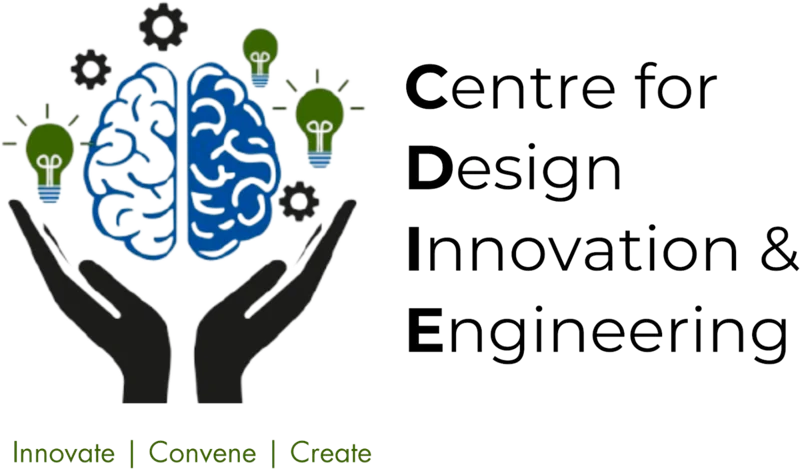
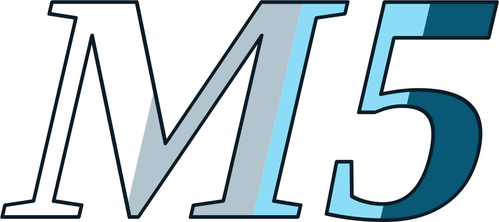
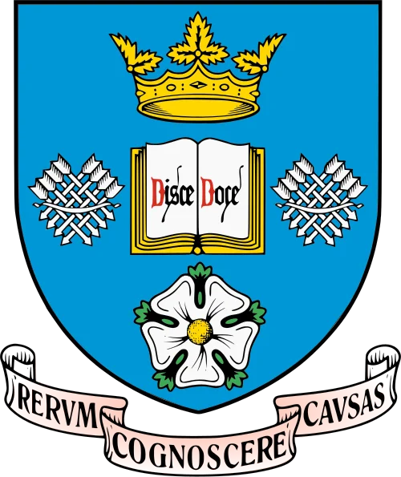

People
Organizers
Six people who brought students, clinical context and technical mentorship into the same room.
Select a person to read their role. The carousel pauses while you explore.
Programme institutions
Made together in Nairobi.





Model inspirationUniversity of Sheffield
Hackcessible Nairobi draws inspiration from Sheffield’s model. Sheffield is not presented as an official programme partner.